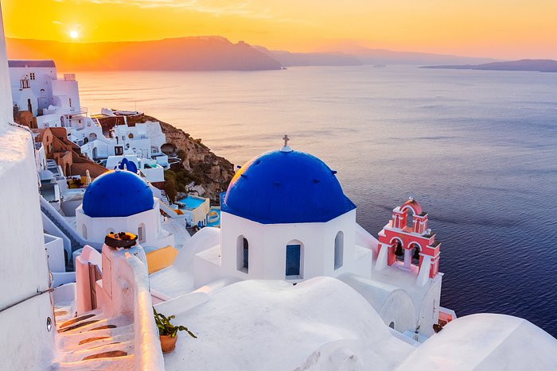

Boracay
Boracay is one of my favorite places that I have visited, as it provides a nice view of a white sand beach, in which the water is also crystal clear. There are a lot of tourist attractions as well in the area, such as nearby islands, in which you can rent a boat ride to be able to explore those. There are also a lot of food choices in the area, in which you should not miss the traditional Filipino dishes in the area. Indeed, it is one great experience of a life time for me. Hopefully, I get to visit it again soon.
Paris

Paris is a dream place of me to visit. It features the world famous Eiffel Tower, in which it is a very tall structure. Paris is also known to be a romantic place with romantic vibes. The scenery of the place is just really calming and is relaxing to see. It is currently at my travel plan, and I do hope I would be able to visit it real soon. The place also offers a lot of fantastic and delicious food, in which one of the dishes I want to try is the ratatouille. I based it off the movie of Ratatouille itself, in which it is the final dish presented. I want to try it specifically at France, knowing it would taste and feel better, when eating in from where it is originated.
Santorini

Santorini is a very calming and beautiful place, in which it is surrounded by the sea, and the place features beautiful white buildings, in which makes the place shine even brighter than the sun. The place features a really nice view of the see, and the buildings included make the place even much more beautiful than ever. Another thing that makes the visit interesting, is the food while having that really nice view. I do hope to be able to go there somewhere and there is no way I am not making this come true.